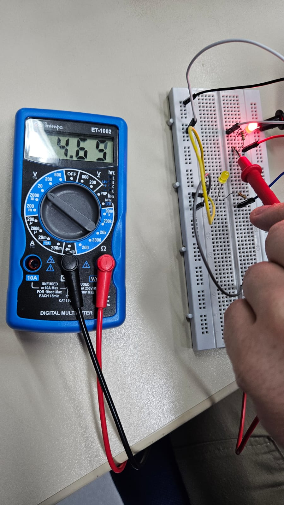
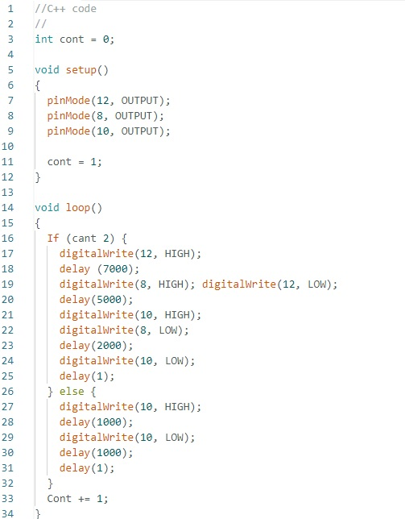

Arduíno na Prática – Semaforo Simples
Programação do Semáforo Simples com Contador de LED Intermitente

Vídeo da Montagem Prática
Código C++ da IDE ARDUÍNO

Fonte:
Arduino IDE
Código C++
//C++ code
//
int cont = 0;
void setup()
{
pinMode(12, OUTPUT);
pinMode(8, OUTPUT);
pinMode(10, OUTPUT);
cont = 1;
}
void loop()
{
If (cant 2) {
digitalWrite(12, HIGH);
delay (7000);
digitalWrite(8, HIGH); digitalWrite(12, LOW);
delay(5000);
digitalWrite(10, HIGH);
digitalWrite(8, LOW);
delay(2000);
digitalWrite(10, LOW);
delay(1);
} else {
digitalWrite(10, HIGH);
delay(1000);
digitalWrite(10, LOW);
delay(1000);
delay(1);
}
Cont += 1;
}